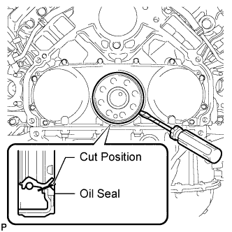

REAR CRANKSHAFT OIL SEAL > REMOVAL |
| 1. DISCONNECT CABLE FROM NEGATIVE BATTERY TERMINAL |
Disconnect the cable from the negative (-) main battery and sub-battery terminals.
| 2. REMOVE AUTOMATIC TRANSMISSION ASSEMBLY |
Remove the automatic transmission assembly (Click here).
| 3. REMOVE MANUAL TRANSMISSION UNIT ASSEMBLY |
Remove the manual transmission unit assembly (Click here).
| 4. REMOVE CLUTCH COVER ASSEMBLY (for Manual Transmission) |
 |
Put matchmarks on the clutch cover and flywheel.
Loosen each set bolt one turn at a time until spring tension is released.
Remove the 8 set bolts, and pull off the clutch cover.
| 5. REMOVE CLUTCH DISC ASSEMBLY (for Manual Transmission) |
| 6. REMOVE DRIVE PLATE AND RING GEAR SUB-ASSEMBLY (for Automatic Transmission) |
 |
Using a wrench, hold the crankshaft.
 |
Remove the 8 bolts.
 |
Remove the rear drive plate spacer labeled A, drive plate and ring gear labeled B and rear crankshaft balancer weight labeled C.
| 7. REMOVE FLYWHEEL SUB-ASSEMBLY (for Manual Transmission) |
|
Using a wrench, hold the crankshaft.
 |
Remove the 8 bolts and flywheel.
| 8. REMOVE REAR CRANKSHAFT OIL SEAL |
 |
Using a knife, cut off the lip of the oil seal.
Using a screwdriver, pry out the oil seal.